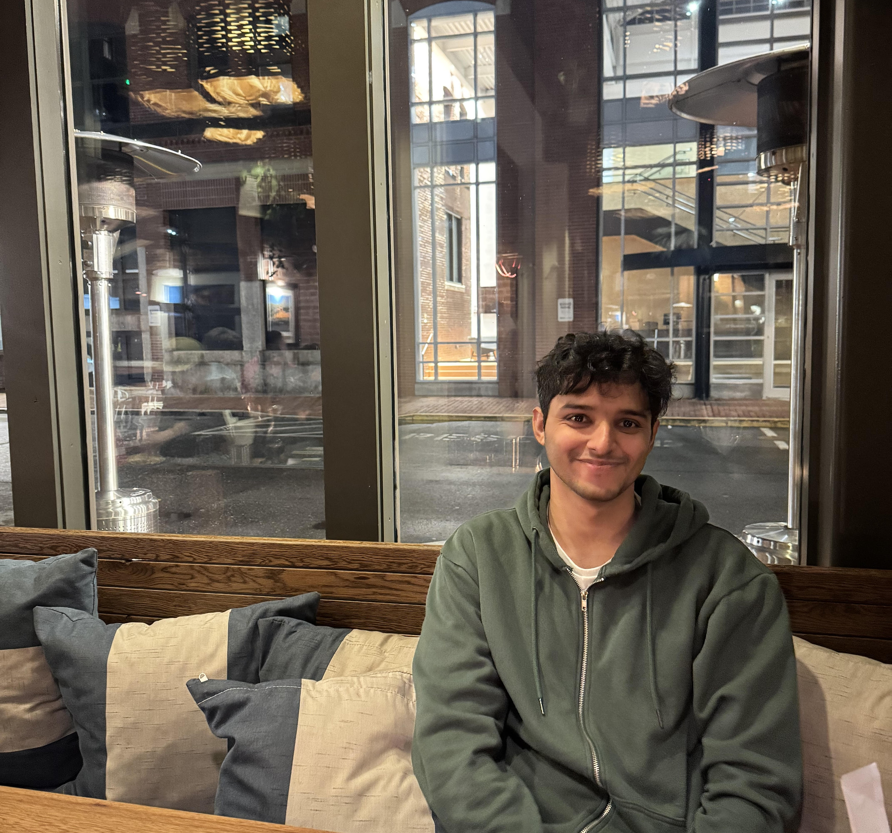
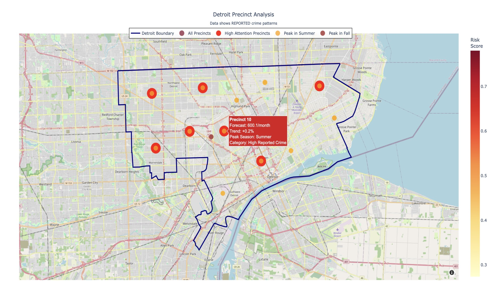
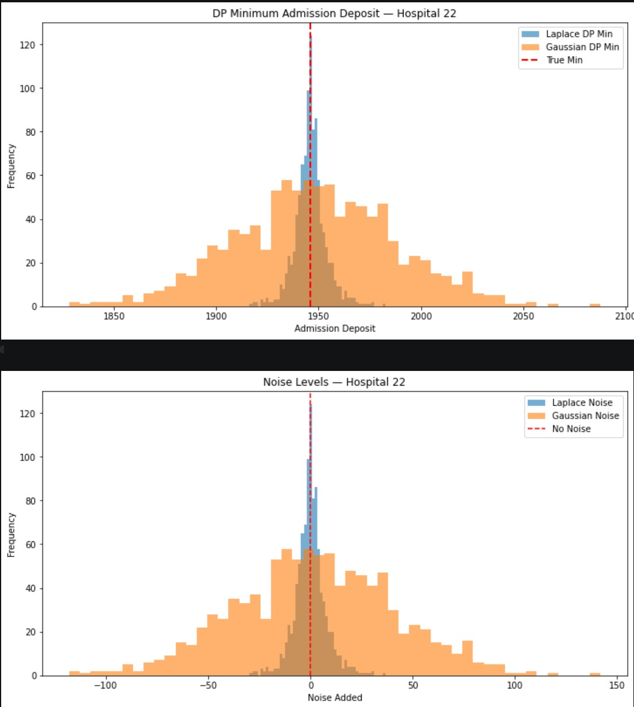
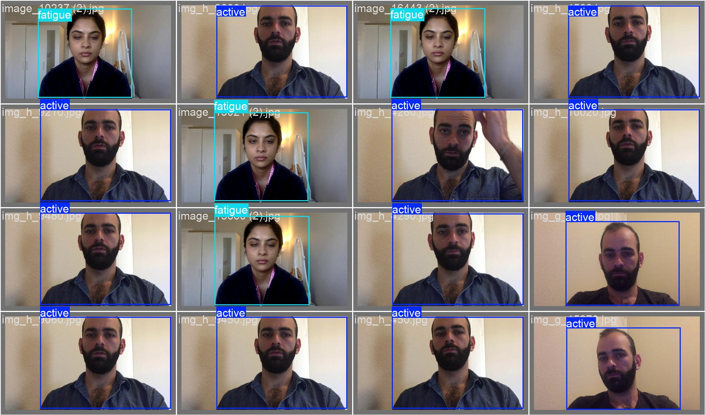
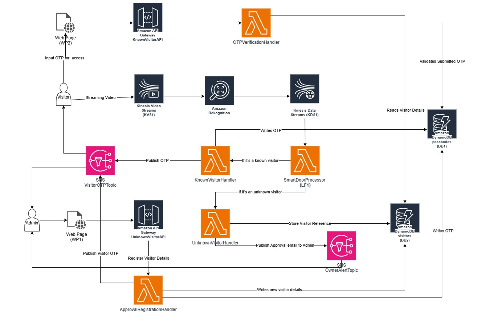
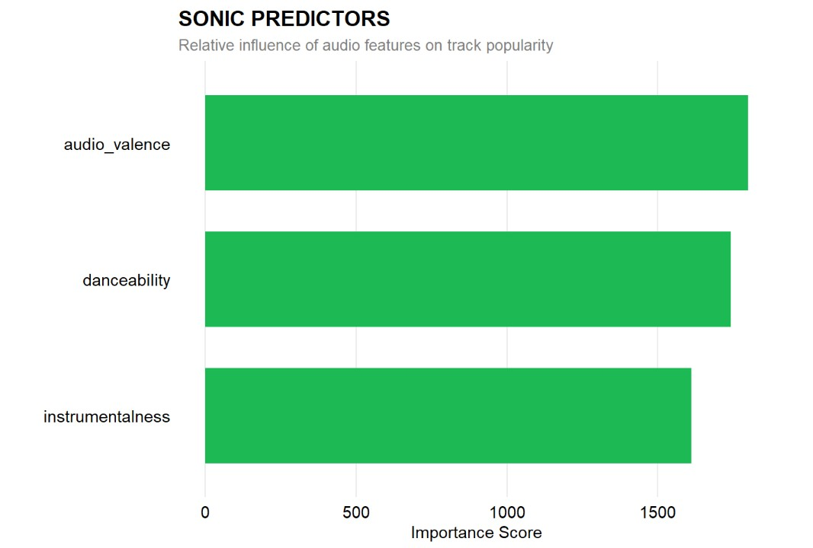
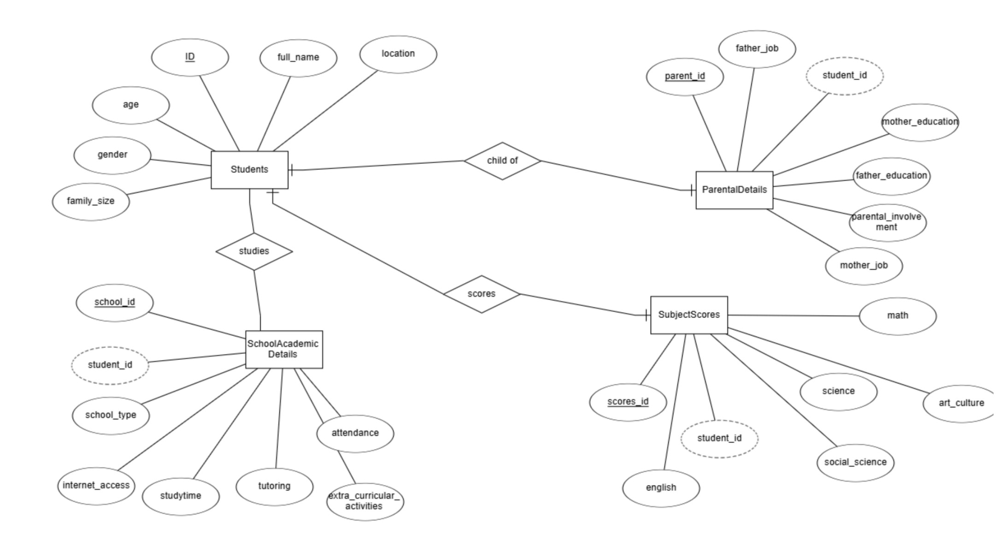
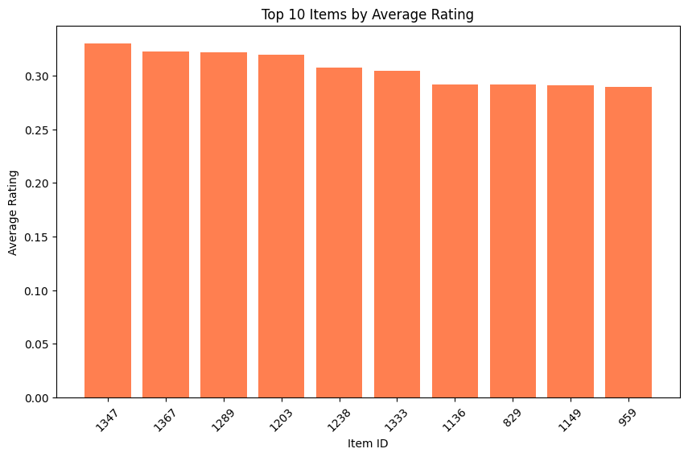

Data Science · Machine Learning · AI Engineering
Building scalable ML architectures, intelligent automation systems, and production-ready AI pipelines.
View Selected Work
Your Photo HereFive years building production systems. Now engineering intelligence into them.
I spent five years at Capgemini architecting automation and data systems for Synchrony Financial - processing millions of records daily, building ETL pipelines handling 5GB+ of semi-structured data, and maintaining 99%+ uptime across production deployments. That foundation in production-grade engineering now shapes how I approach data science: with a builder's instinct.
Currently completing my M.S. in Data Science at the University of Michigan-Dearborn (GPA 3.78), I'm deepening expertise in deep learning, geospatial analysis, differential privacy, and generative AI. I'm targeting roles across Data Science, Data Analysis, ML/AI Engineering, and GenAI - wherever rigorous engineering meets applied intelligence.
I'm drawn to problems at the intersection of scale and precision: systems that don't just process data - they learn from it.
Engineering
5+ yrs production ETL & data pipelines
Research
Deep learning, CV, forecasting, GenAI
Cloud
AWS Certified - Lambda, DynamoDB, S3
M.S. in Data Science · GPA: 3.78 / 4.0
Dearborn, MI, USA
Relevant Coursework
B.Tech in Software Engineering · CGPA: 7.60 / 10.0
Chennai, TN, India
Four-year engineering program covering software architecture, data structures & algorithms, operating systems, computer networks, and database management - a systems-level foundation that directly underpins my current work in scalable data engineering and applied ML.
Capgemini · Client: Synchrony Financial
Five years of production engineering at scale. The tooling was RPA; the discipline was data - pipeline architecture, ETL, quality governance, and cross-functional technical leadership.
1,000+
Daily records processed across campaign pipelines
5 GB+
ETL workflows across semi-structured file formats
50 concurrent
Software releases validated with zero data integrity failures
Data Pipeline Engineering
Data Quality & Governance
Cloud Architecture & Migration
Technologies

Spatial-Temporal Analysis · Geospatial Engineering · SARIMAX & LSTM

Data Security · Privacy-Preserving Analytics · Laplace & Gaussian Mechanisms

Computer Vision · YOLOv8 · Real-time Inference

Cloud Architecture · AWS · Edge Ingestion

Statistical Modeling · R · Random Forest

Relational Modeling · SQL Optimization · ETL Pipelines

PySpark · Collaborative Filtering · ALS
Amazon Lex · AWS Lambda · S3 Hosting · Python